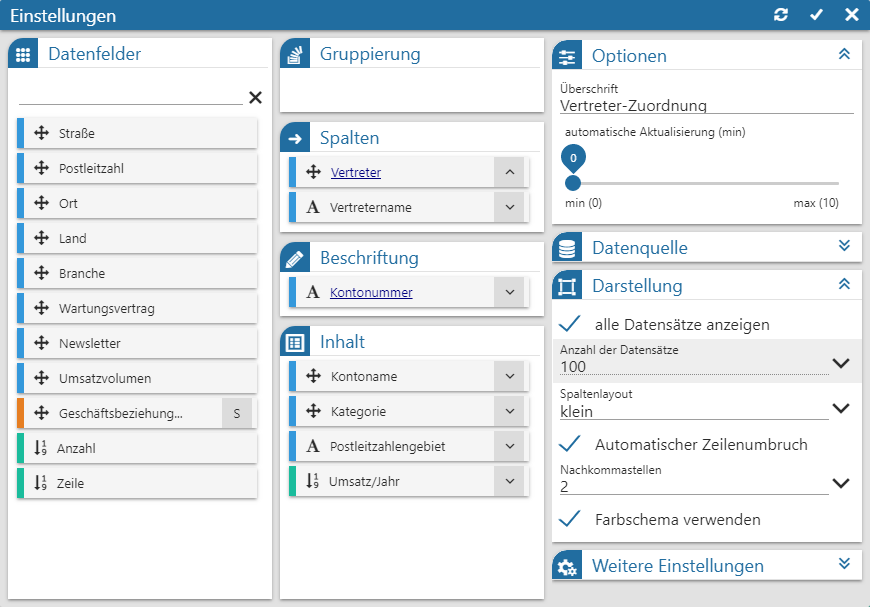
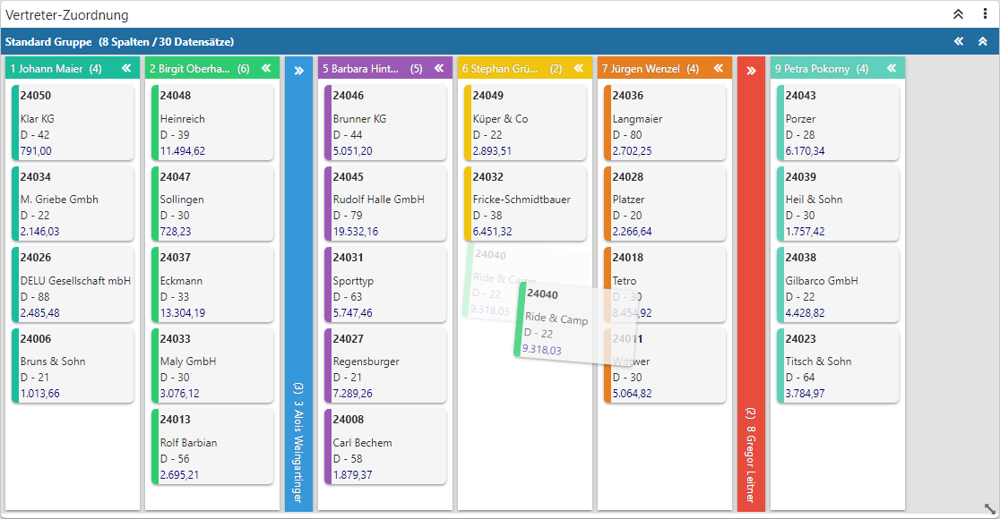
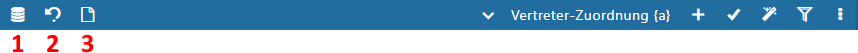
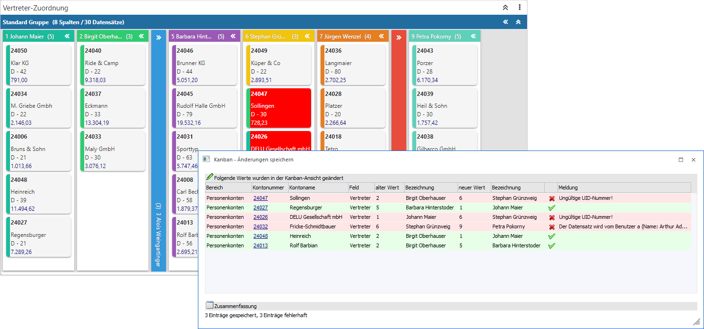

Mit Hilfe des Buttons "Ausgabe Kanban" können die folgenden WinLine-LIST-Listtypen in Form eines Kanbans dargestellt werden, wobei die optische Aufbereitung über den Power Report erfolgt:
ü 00 - Kontenstamm (Sachkonten)
ü 01 - Debitorenstamm (Kunden)
ü 02 - Kreditorenstamm (Lieferanten)
ü 04 - Artikeldatei (Artikelstamm)
ü 08 - Anbu Stamm
ü 09 - Arbeitnehmerstamm (Österreich)
ü 13 - Interessenten (Kundeninteressenten)
ü 14 - Anfragelieferanten
ü 15 - Kostenstamm
ü 21 - Projekte
Der elementare Unterschied zu einer gewöhnlichen Power Report-Ausgaben ist die Interaktivität im Kanban, d.h. es können Veränderung via Drag & Drop im Kanban durchgeführt und in diese in den Stammdaten gespeichert werden.
Zusätzlich dient der Kanban als zentrales Element der Anzeige. D.h. werden Veränderungen im Kanban getätigt, so führt dieses automatisch zu einer Aktualisierung aller weiteren Widgets (noch vor der Übernahme in die Stammdaten).
Achtung
Im Gegensatz zu einem Power Report mit Datenquellen ist die Verwendung weiterer Datenquellen und die Nutzung des Widgets Geo Map nicht möglich.
Einstellungen - Stammdaten-Kanban

Die Einrichtung des Stammdaten-Kanbans unterscheidet sich im ersten Moment nicht zu einem herkömmlichen Power Report-Kanban (siehe auch Power Report - Widgets - Kanban). Die einzige Besonderheit besteht in der gesonderten Kennzeichnung der Drag & Drop-Felder und in dem zur Verfügung stellen der Option "Editieren".
Ø Drag & Drop-Feld
Handelt sich um ein Drag & Drop-Feld aus den Stammdaten, so wird dieses mit Hilfe des Symbols gekennzeichnet. Sobald solch ein Feld in die Tabelle "Spalte" gelegt wird (an erster Stelle), steht die Option "Editieren" zur Verfügung.
Hinweis
Der obere Inhalt der Tabelle "Spalte" stellt das zu ändernde Element da. D.h. ist z.B. die Vertreternummer der Debitoren dort hinterlegt, so ändert man per Drag & Drop die Vertreterzuordnung des Personenkontos.
Ø Editieren
Wenn ein Drag & Drop-Feld in die Tabelle "Spalte" gelegt wird, steht die Option "Editieren" zur Verfügung. Durch Aktivierung wird das Drag & Drop innerhalb des Kanbans freigeschaltet, d.h. es können über diesen Weg Stammdatenänderungen getätigt werden.
Hinweis
Ein Editieren ist nicht möglich, wenn die Datengruppierung aktiviert wurde.
Änderungen durchführen

Die Kacheln des Kanbans stellen immer ein Objekt da, wobei dieses abhängig von der aktuellen WinLine LIST-Liste ist. So wäre in einer "04 - Artikeldatei"-Liste das Objekt ein Artikel und in einer "01 - Debitorenstamm"-Liste das Objekt ein Personenkonto.
Sobald das Editieren aktiviert wurde können die Objekte von einer in eine andere Spalte verschoben werden. Ist die Spalte z.B. die Vertreternummer der Debitoren, so ändert man per Drag & Drop die Vertreterzuordnung von Personenkonten.
Kopfleiste - Stammdaten-Kanban

In der Kopfleiste stehen die neben den allgemeinen Steuerungselementen des Power Reports drei Buttons zur Nutzung des Stammdaten-Kanbans zur Verfügung. Voraussetzung hierfür ist allerdings das Aktivieren der Option "Editieren" im Kanban.
Ø Änderungen in Datenbank speichern (1)
Durch Anwahl dieses Buttons werden alle getätigten Änderungen in den Stammdaten gespeichert. Hierfür wird das Fenster Kanban - Änderungen speichern geöffnet, in welchem ersichtlich ist, ob die Speicherung erfolgreich war oder nicht.
Achtung
Sollte die Speicherung einzelner Änderungen nicht möglich gewesen sein, so wird im Fenster Kanban - Änderungen speichern der Grund angezeigt. Zusätzlich werden all jene Änderungen im Kanban in rot gekennzeichnet, bleiben aber in der Wunsch-Spalte stehen. D.h. wenn der Grund behoben wurde, so kann die Speicherung durch Anwahl des Buttons nochmals ausgelöst werden.
Beispiel

Ø Änderungen verwerfen (2)
Bei Anwahl dieses Buttons werden alle nicht gespeicherten Änderungen verworfen und der Kanban, sowie alle weiteren Widgets, zurückgesetzt.
Ø Vorschau (3)
Mit Hilfe dieses Buttons wird eine Vorschau der zu tätigenden Stammdatenänderungen am Bildschirm ausgegeben.